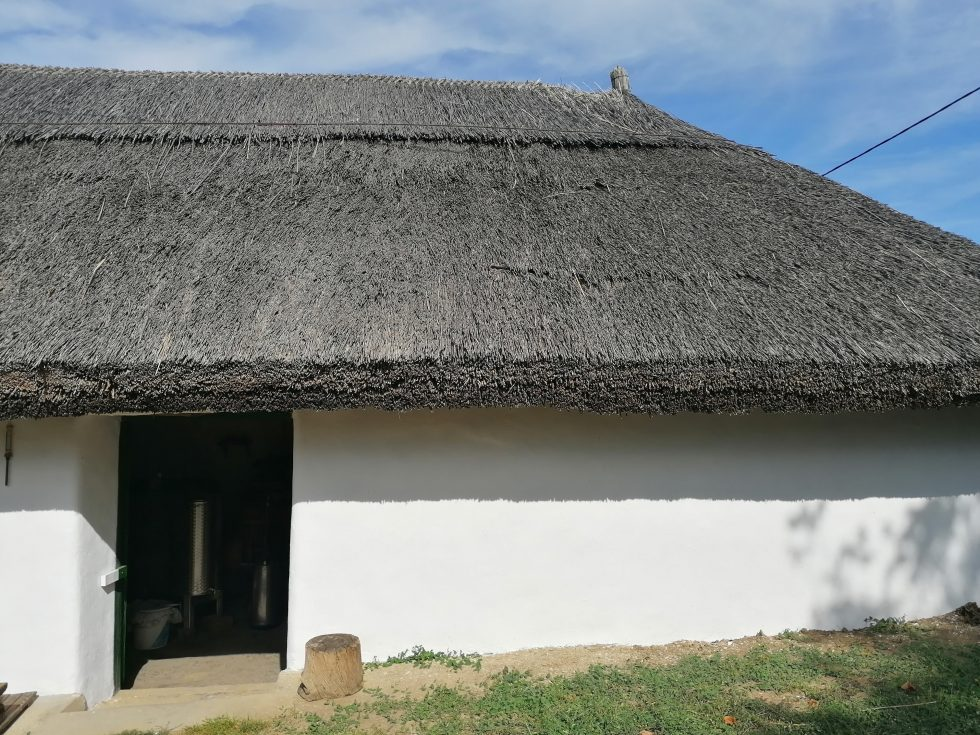

Bemutatkozás 
Kovács Barnabás vagyok, balatoni családom révén már nagyon korán elkezdtem szőlővel foglalkozni és bort készíteni. Családom már hat generáció óta termel borokat a Dél-balatoni borvidéken, így már igen nagy tapasztalattal rendelkezünk Célunk a lehető legjobb minőségű szőlő megtermelése a dűlőkben, hogy majd abból hagyományos technikákkal a mai igényeknek megfelelő bort készítsünk Természetesen bérmunkáim során is ugyanakkora lelkesedéssel és odafigyeléssel gondozom a szőlőt, mintha sajátom lenne